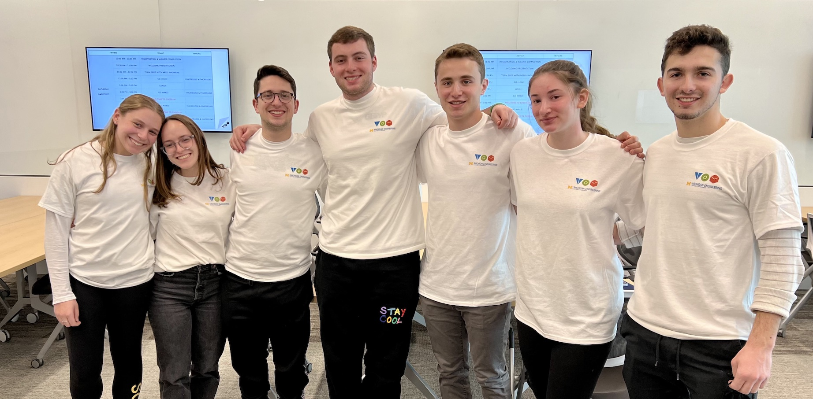

TOM: Michigan's Impact
Design Challenge
The TOM: Michigan Design Challenge 2021 is a social-good initiative that will support the needs of Need-Knowers from Friendship Circle Michigan, a local non-profit which aims to provide every individual with special needs the support, friendship, and inclusion that they deserve. Makers from the University of Michigan community will work independently or on teams to create prototypes that solve one of three challenges that impact the lives of these Need-Knowers.
Team Allie: Sensory Sensitivity
Allie is a 13 year-old girl who lives with severe ADHD. She loves reading books, Sesame Street, Peppa Pigs, and her dogs! She is sensitive around her face, and as a result has trouble keeping her mask on.
-
The Challenge:
To create a sensor-friendly mask for individuals with sensory challenges. Why? Many of the children at Friendship Circle have various sensory challenges that impact their ability to comfortably wear a mask. Some don’t like the feeling of the mask on their face or their face being covered and others don’t like the feeling of their own breath blowing back at them. -
TOM: Michigan's Solution:
A 3 layered mask with cupped shape. Layers are interchangeable for maximum customization. Variety of patterns and ways of appealing to the wearer optioned.
Sensory Sensitivity Winning Design
Team Hannah: Risky Running
Hannah is an 18-year-old girl who lives with down syndrome. She loves music, singing, arts and crafts and food! Sometimes upon impulse, Hannah runs away from her current location, notifying no one.
-
The Challenge:
To create a product that addresses the issue of children running out of their guardian’s sight. Why? This is often scary for guardians as they often do not have a way of contacting Hannah or know of her whereabouts. It adds an immense amount of stress to caregivers and prevents them from being able to have time to themselves without worrying about their child. -
TOM: Michigan's Solution:
A tracking device attached to a waistband clip of the child with location information sent to a receiver belonging to the parent/guardian. This receiver will send the location information to the parent/guardian's cell phone to see the location of the child. Our device shares location information as well as warns the parent if the child becomes a certain distance away from the parent/guardian.Learn more about the winning solution here.
TOM: Michigan Makeathon
Makeathons are dynamic marathons of making in which teams of Need-Knowers and Makers come together to design and create a solution for a neglected challenge. The outcome of the Makeathon is a working, well-documented prototype.
During Winter 2022 Term, The TOM: Michigan community hosted their first ever Makeathon this year, led by former TOM Fellow Eitan Abecassis and Current TOM Fellow Leah Feilbogen. Over the course of the weekend, student teams worked on two challenges.
Challenge One: Team Matthew
Created an adjustable grip that attaches to a tennis racket to provide wheelchair bound tennis players with more grip support
Challenge Two: Team Rebecca
Created a backup camera that attaches to a wheelchair so wheelchair bound people can better see their surroundings